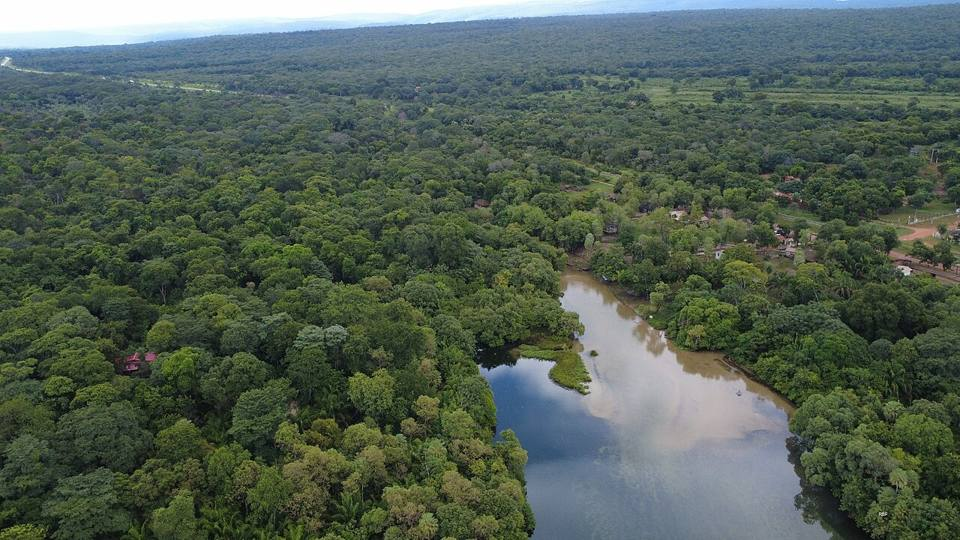

Aguas Calientes (hot river)
Santa Cruz Department · Nature and hiking

Aguas Calientes is a natural river of hot water flowing through the dry forest. The water is clear and around 38 °C, and the sandy bottom bubbles. You can soak for hours surrounded by small fish, then have dinner by the water in the evening. A truly unique experience, and very relaxing after long journeys.
200 maltitude
1 dayto spend there
Things to do
- Swim in the río termal (the sandy bottom bubbles)
- Stay until nightfall, the water stays warm
- Campsites and small restaurants by the water
What to eat
- River fishSurubí, pacú or dorado, grilled over a wood fire or fried, with rice, cassava and plantain. Delicious by the water, in the Llanos and the Amazon.
- MajaditoRice cooked with charque or chicken, served with a fried egg and fried plantain. The dish of Santa Cruz and the Beni.
- Tropical fruitMangoes, pineapples, papayas, achachairú (a small tangy fruit) and fresh juices everywhere for a few bolivianos.
Tip. About 30 km from Roboré. Avoid public holiday weekends, when it's packed with people from Santa Cruz.
How to get to Aguas Calientes
Roboré Road (bus, car) · 45 min
Taxi or micro from Roboré (the train also stops there).
Photos of Aguas Calientes (hot river)

_-_Robor%C3%A9,_Bolivia.jpg){kind=link}
More places in this region
 Chochís and the Torre de DavidA huge red cliff, the Torre de David, with a sanctuary at its foot and waterfalls in the Tucavaca valley.
Chochís and the Torre de DavidA huge red cliff, the Torre de David, with a sanctuary at its foot and waterfalls in the Tucavaca valley. RoboréA quiet small town in the Chiquitanía, a base for Santiago de Chiquitos, Chochís and Aguas Calientes.
RoboréA quiet small town in the Chiquitanía, a base for Santiago de Chiquitos, Chochís and Aguas Calientes. Santiago de ChiquitosAn old mission village up in the hills: viewpoints, hikes, caves and waterfalls.
Santiago de ChiquitosAn old mission village up in the hills: viewpoints, hikes, caves and waterfalls.